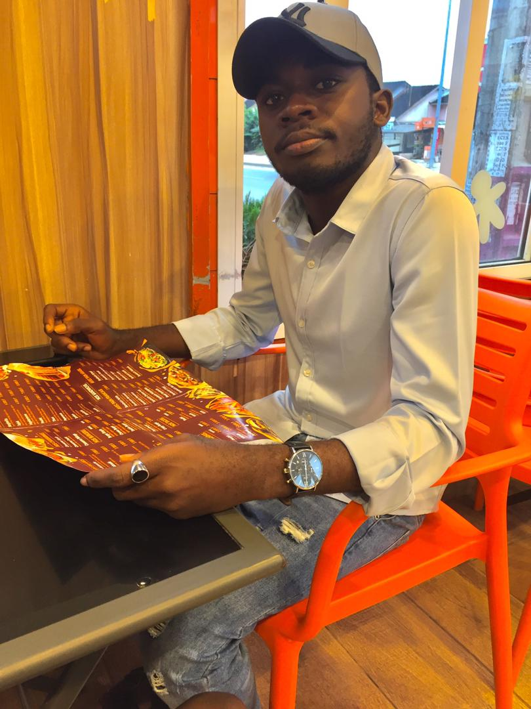

Koffi Adjei Patrick

Je suis un jeune informaticien passionné de la technologie qui aime le travail archané.
- FORMATION
-
2022-2023:
-2ème année Licence Professionnelle en Réseaux et Génie Logiciel
-BTS en IDA(Informatique Developpeur d'Application)
-
2021-2022:
1ère année licence Professionnelle en Réseaux et Génie Logiciel
-
2020-2021:
Baccalauréat série D au Lycée Moderne Abengourou
- COMPETENCES
- Création et gestion d'une base de donnée avec Mysql
- Connaissances des languages tel que SQL, Python, C, Visual basic
- Création de sites web avec PHP, HTML-CSS
- CERTIFICATIONS
- Certificat en Excel délivré par PIGIER CI en mai 2022
- Certificat en Python délivré par Gomycode en juin 2022
Autres